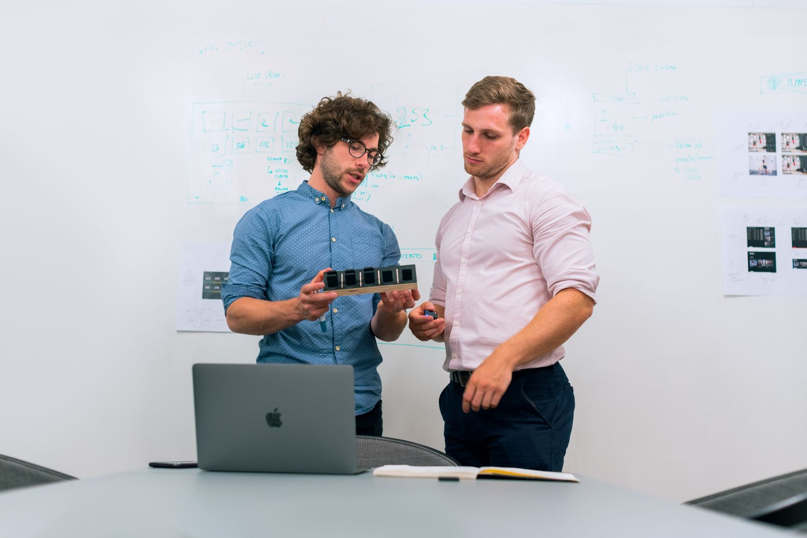
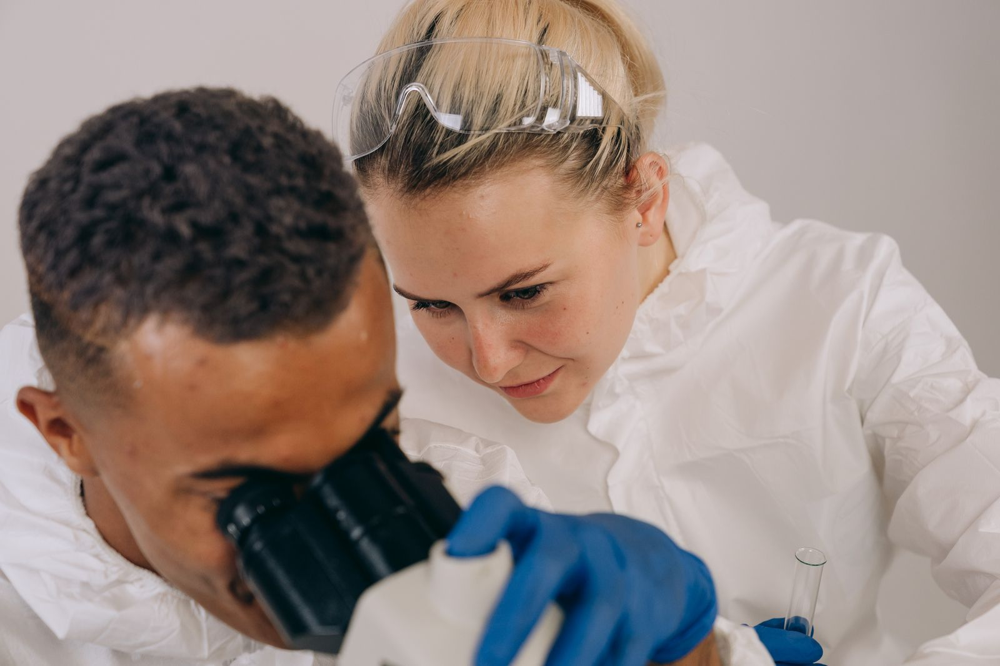
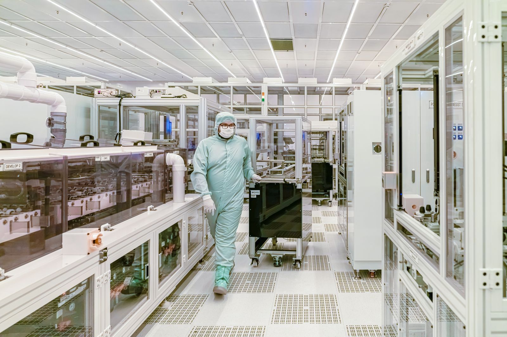
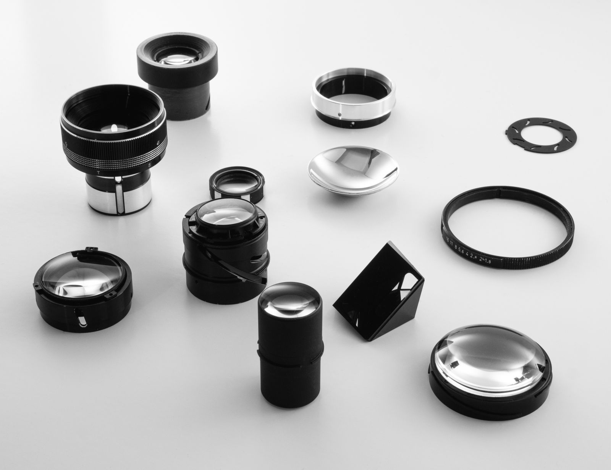
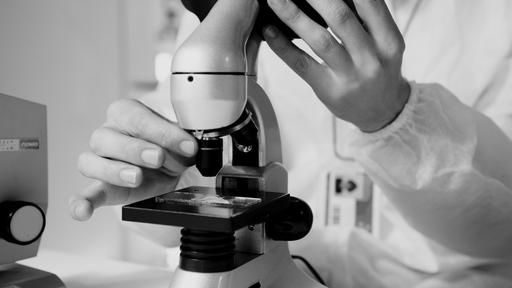
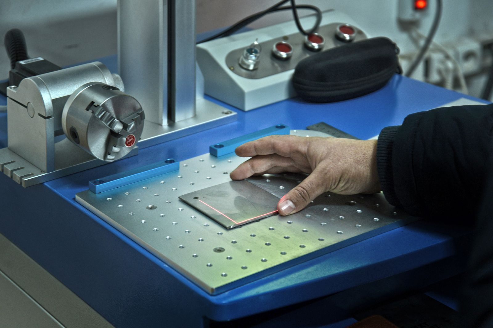
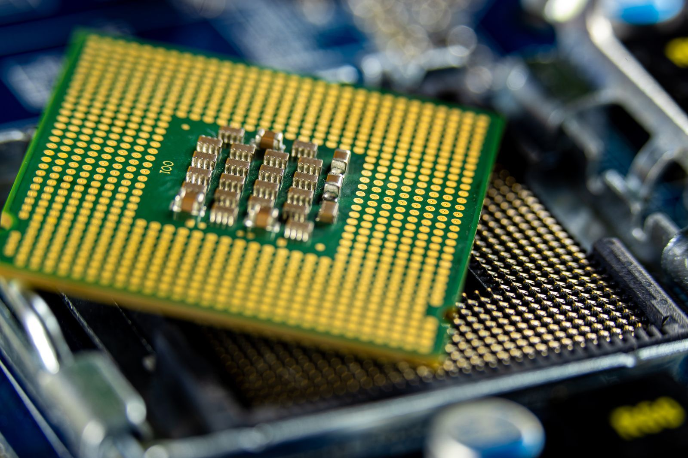

“My laser mirrors lose too much light.”
The fix
Ion beam sputtering builds dense, low-scatter layers for ultra-low-loss mirrors.
 Precision Optical CoatingsIBS & PARMS coatings for laser, quantum and photonics research.
Precision Optical CoatingsIBS & PARMS coatings for laser, quantum and photonics research. Thin-Film Deposition for R&DConfigurable ORTUS and ASTRA-S platforms, from lab to pilot.
Thin-Film Deposition for R&DConfigurable ORTUS and ASTRA-S platforms, from lab to pilot. Optical Monitoring & UpgradesAdd OCP optical process control to the coater you already own.
Optical Monitoring & UpgradesAdd OCP optical process control to the coater you already own. Infrared & DLC CoatingsMWIR/LWIR coatings and DIAMANTA DLC for harsh environments.
Infrared & DLC CoatingsMWIR/LWIR coatings and DIAMANTA DLC for harsh environments.From precision optical coatings to thin-film process development. Explore advanced vacuum coating and optical monitoring technologies from i-Photonics for photonics, optics, materials science and infrared research, supplied and supported locally by Dymek.
Most enquiries start with one of these. Pick yours and an engineer will reply with a clear next step.
Ion beam sputtering builds dense, low-scatter layers for ultra-low-loss mirrors.
In-situ optical monitoring stops each layer at its target and corrects errors as it goes.
Add OCP optical monitoring to the coater you already own, instead of buying a new one.
Diamond-like carbon protects germanium and ZnS optics from sand, rain and abrasion.
Configurable PIAD and sputtering platforms grow with your research, from lab to pilot.
Get a budgetary quotation and a technical specification sheet to support your application.
Whether you are establishing a new thin-film capability, developing a demanding optical coating or extending an existing deposition system, start with the research problem.
i-Photonics develops thin-film deposition and process-control solutions based on Ion Beam Sputtering (IBS), PARMS, Plasma Ion-Assisted Deposition (PIAD), magnetron sputtering, Diamond-Like Carbon (DLC) and advanced optical monitoring. Dymek supplies and supports them across Southeast Asia.
Develop high-performance multilayer coatings for demanding optical applications.
Explore IBS and PARMS technologies for:
i-Photonics IBS and PARMS enable extremely dense, defect-free optical layers with virtually zero scatter loss, engineered to meet rigorous spectral performance targets in research labs and photonics manufacturing.
Explore precision optical coatings
Build a flexible deposition capability around your research rather than a single process.
Explore PIAD and magnetron sputtering platforms for:

A new coating system is not always the answer. For laboratories already operating evaporation, sputtering, IBS or other PVD equipment, advanced optical monitoring can provide another route toward more demanding multilayer coatings.
Explore OCP optical monitoring for:

Develop coatings for wavelengths and operating environments where conventional visible-optics solutions are no longer sufficient.
Explore technologies for:

European thin-film technology, supplied and supported right here in Southeast Asia.
Answer four quick questions. The suggestion updates as you go.
1What matters most in your work?
2Largest substrate or batch?
3Where will it run?
4When do you need it?
Start with what you are trying to achieve, not with a machine.
Tell Dymek about your optical targets, film specifications, substrate and current limitations. A rough description is enough to start, and an engineer replies within one working day.

Together with i-Photonics application specialists, we review your design and recommend the right route: a new system, an optical monitoring upgrade, or custom process development.

Dymek handles on-site commissioning, training, process optimisation and maintenance across Southeast Asia, with direct access to i-Photonics engineers in Europe.

i-Photonics, based in Lithuania, designs and builds vacuum coating systems, in-situ optical monitoring and specialised coating processes. Dymek is the team you talk to in Southeast Asia.

Configurable sources, substrate holders and monitoring systems that adapt as your research shifts.
Dense, stable optical coatings where absorption, scattering, layer accuracy and repeatability are critical.

Reactive magnetron sputtering, plasma assistance and in-process optical monitoring for demanding interference coatings.

E-beam evaporation with plasma ion-assisted deposition for flexible optical coating research.

Lab-scale sputtering that reproduces inline conditions, with a clear path toward production.

Diamond-like carbon for durable infrared optics in harsh environments.

In-situ spectral measurement, automated layer endpoint control, real-time error compensation and retrofit integration with existing coaters.
by i-Photonics · SingleWave & Broadband DymekRapid technical support, on-site commissioning, process optimisation and maintenance across Southeast Asia.
Talk to Dymek
Configurable process platforms built around research requirements, so scientists can focus on fundamental research and material discoveries.
“We need a flexible deposition platform for optical and functional thin films, with optical monitoring built in.”

Ultra-low-loss laser mirrors, narrowband filters and complex interference stacks with IBS and PARMS technology.
“Our narrowband filters need tighter repeatability across long multilayer runs.”
MWIR and LWIR coatings on Ge, Si, ZnS and chalcogenide substrates, protected with diamond-like carbon.
“We need broadband AR across 8–14 µm on germanium windows, with DLC for outdoor durability.”

Modular platforms that scale from laboratory R&D toward pilot and production processes.
“Can a process developed at lab scale transfer to an inline production system later?”
Funding applications need numbers you can trust. We prepare the documents your proposal needs.
Tell us your coater model and process. We check viewports, software and optical fit with i-Photonics.
Explore technical insights on thin-film coating processes, optical monitoring and vacuum technologies. Pick a question.
Thin-film coating deposits layers of material, from a few nanometres to several micrometres thick, onto a substrate to change how it reflects, transmits, absorbs or conducts. Deposition happens in a vacuum using methods like sputtering or evaporation, and stacking layers of different refractive indices produces precise optical effects.
Optical coatings control light on lenses, mirrors and filters. Common types are anti-reflection coatings, high-reflectivity mirrors, bandpass and narrowband filters, beam splitters and polarisers. They are used in lasers, cameras, spectroscopy, telecom, thermal imaging and quantum photonics.
IBS fires a focused ion beam at a target, and the ejected material deposits onto a substrate. It produces extremely dense, smooth, low-scatter, low-absorption layers, which is why it is the standard for ultra-low-loss laser mirrors and high-precision filters.
IBS gives the densest and lowest-loss films but has lower deposition rates. Magnetron sputtering uses a plasma near the target and is faster and scalable, and PARMS is a plasma-assisted variant that improves density and stoichiometry. PIAD adds an ion source to evaporation to densify films and reduce moisture-related spectral shift.
Optical monitoring measures a coating’s transmission or reflection in real time during deposition. It detects when each layer reaches its target thickness (layer endpoint control) and can compensate for errors in later layers. This improves repeatability and yield, especially for narrowband filters and multilayer designs.
Yes. Many coaters can be retrofitted with in-situ spectral monitoring and automated endpoint control. This extends the capability of existing equipment without buying a new system, though compatibility depends on chamber geometry and available viewports. Dymek can assess your coater with i-Photonics.
MWIR covers roughly 3–5 µm and LWIR roughly 8–12 µm. They suit different detectors and applications: MWIR is often used for high-sensitivity cooled imaging and gas sensing, while LWIR is the standard for uncooled thermal cameras. Each needs coatings designed for its band, usually on Ge, Si or chalcogenide optics.
These materials transmit well in the infrared where ordinary glass is opaque. Germanium has a very high refractive index and is common in LWIR, silicon is lightweight and suits MWIR, and chalcogenide glasses can be moulded into complex lenses. Their high refractive indices create strong surface reflections, so broadband anti-reflection coatings are essential.
DLC is an amorphous carbon film with high hardness, low friction and good chemical resistance. In optics it serves as an ultra-hard protective layer on IR windows and lenses, such as Ge, against abrasion, sand and rain erosion, and it also has non-optical uses on tools and engine parts.
Transparent conductive films combine optical transparency with electrical conductivity. Common materials are indium tin oxide (ITO), doped zinc oxide and thin metal-based stacks. They are used in touchscreens, displays, solar cells, optoelectronic devices, and de-icing or EMI-shielding windows.
Dymek is your local contact for i-Photonics technology in Southeast Asia. We handle enquiries, quotations, installation and service across Malaysia, Singapore, Thailand, Vietnam, Indonesia and the Philippines, in your time zone and your language. Email web@dymek.com or use the contact form.